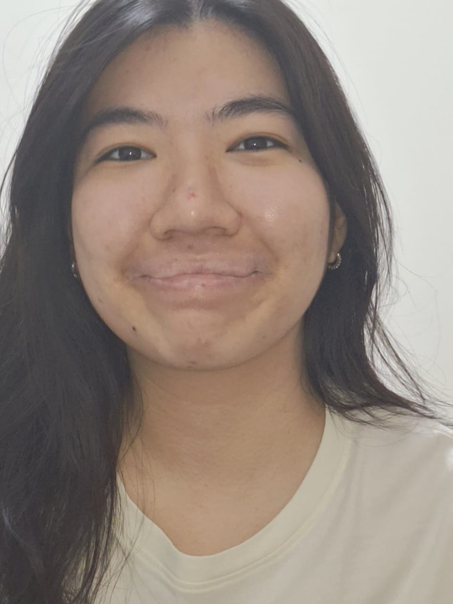
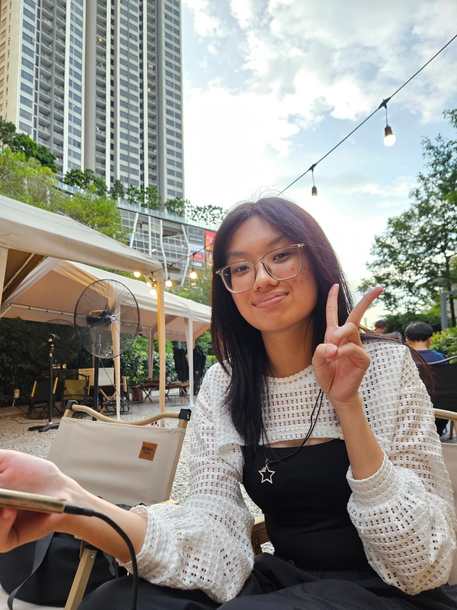
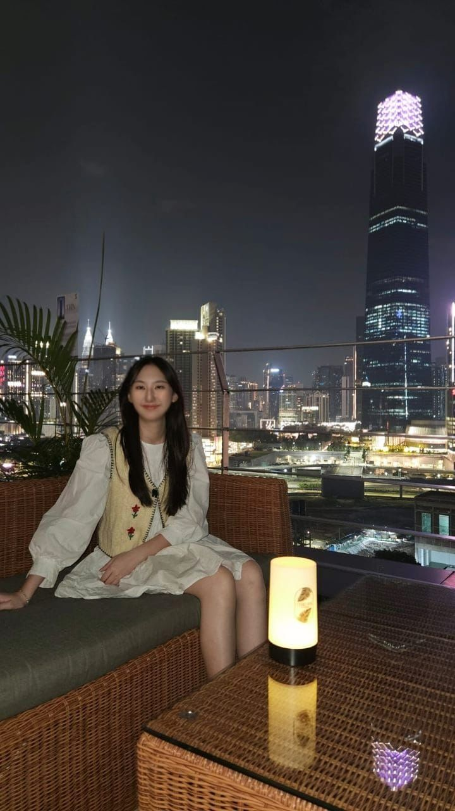

Kimberly Chan Mun Nga
Hello! I am currently a first year Computer Science student at the Sunway University. I approach learning with an open mind and strongly believing in the importance of good time management skills.
My current passion lies in building web and mobile applications, Machine Learning and AI. Please feel free to contact me through email or drop me a message on LinkedIn if you want to collaborate with me for projects or even just a chat! I am currently seeking for internships starting Jan 2027.
Read more

Angelyn Yek Yin Yin
Hi!! I'm currently a Year 1 semester 3 student in Bachelor of Information Technology. I have strong interest in technology and design related fields.
Not only that, I love learning new tools and languages and I'm always looking for opportunities to expand my skill set whether it's through hands-on projects, collaborations or self-initiated challenges.
Read more

Tang Jia Hui
Hi, I'm Tang Jia Hui. I'm a Year 1 Semester 3 student currently pursuing a Bachelor of Science (Honours) in Information Technology at Sunway University.
I have great interest in technology and how it can be used to solve problems in the real world. I am particularly interested in software development, web technologies, and data systems. I really enjoy getting new skills and also working on practical projects and experiences in the IT field.
Read more